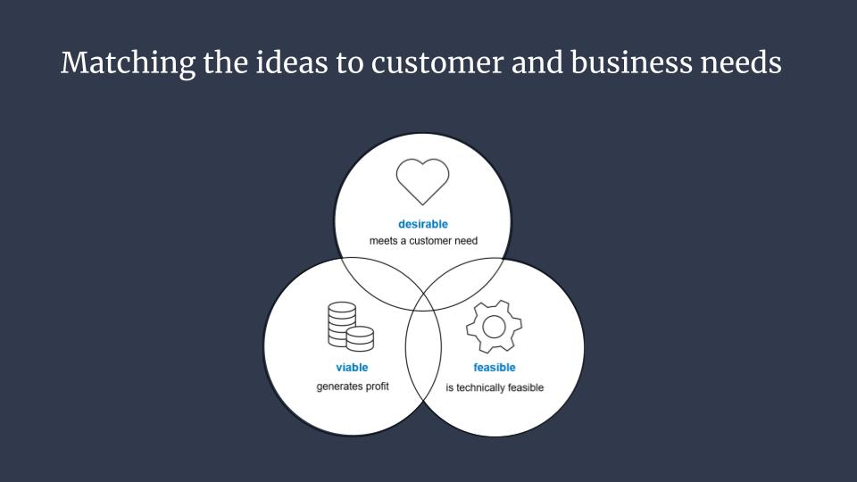

Scania
Uppdrag
Det här var ett studentprojekt där jag tillsammans med fyra andra studenter fick i uppdrag att utforska hållbarhet inom transportindustrin.
Hållbarhet kan utforskas i flera olika dimentioner. Vi valde att bland annat titta på dessa.
- Hur hållbarhet uppfattas
- Hur det tillämpas
- Hur relevant det är
Viktiga insikter
Projektet
- Vid analys identifierades 6 st teman som berör transsportindustrin och dess arbete mot hållbarhet. Dessa teman påverkar varandra och tillsammans skapar de något som vi valde att kalla för investeringscirkeln. Investeringscirkeln innebär svårigheter för industrin att bihehålla ett hållbart tillvägagångssätt. Gällande transportmedel så är infrastukturen begränsad vilket innebär svårigheter för industrin då de ej kan tanka/ladda sina färdmedel när det behövs. Samtidigt går teknologin snabbt framåt och det nya hållbara blir snabbt utdaterat vilket resulterar i behov av att köpa in nya moderna maskiner samt svårigheter att sälja de gamla.
- Kvalitativ researchmetod i form av observation tar tid men bör ej underskattas. I detta fall gav det oss viktiga insikter till arbetet.
Arbetetsprocessen
Strategi
Vi valde att börja med att samla in kvantitativ data i form av enkäter. Vi samlade sedan in kvalitativ data genom intervjuer med viktiga nyckelpersoner inom transportindustrin.
Metoder
- Enkät
- Observation
- Intervjuer
- Omvärldsbevakning
- Tematisk analys
- Idégenerering
Några nyckelkomponeter vi tittade på under processen var:
- Fogg's betéende modell
- Knowns & Unknowns modellen
Rekommendation
Ytterligare research behövs inom området. Vi rekommenderade punkter att utforska vidare. Vår idégenerering landade i ett medlemskap för att föra industrin samman samt ge dem skjuts på vägen mot ett hållbart tänk och arbete.
